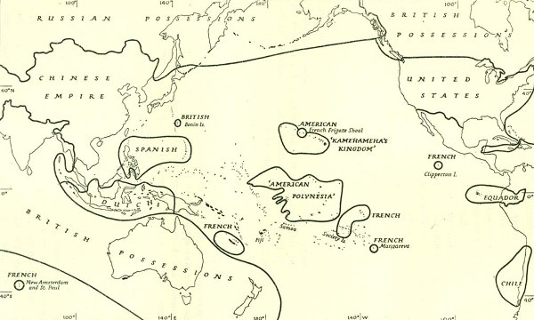

2014-07-29 18:04:00
美国以掠夺原住民土地立国，238年来一直积极扩张。十九世纪前半，经过门罗宣言，路易斯安那购地（Louisiana Purchase）和美墨战争，将领土从大西洋岸一举扩张了十倍，直推到太平洋岸，下一步的扩张自然就是往太平洋走，首当其衝的是两个战略地位很重要的岛国：夏威夷和日本。 1852年，美墨战争才结束四年，海军准将佩里（Commodore Matthew Perry）就急急忙忙地率领炮舰强迫日本对外开放，准备将日本划为美国的特别利益范围，这是美国东亜战略的第一阶段。
1859年时列强在太平洋及周边的势力范围
日本被迫开放之后，如同早了12年在鸦片战争后成为列强鱼肉的中国，也面临社会和经济的危机，不过日本并没有陷入像太平天国那様的全面内战，反而经由1868年开始的明治维新建立了现代的民族国家，迅速走上了资本主义和市场经济的道路。美国原本挑上日本为侵略的目标，是因为来得晚了，中国和东南亜已经被欧洲列强所瓜分；但是1860年代的南北战争使美国一时无力对外，等到1870年代元气恢復，日本已非昔日阿蒙，不再是殖民扩张的可能对象。此时美国最主要的战略目标其实是夏威夷，而其在东亜的最主要对手是海上的英国和陆上的俄国；当时的美国总统格兰特是南北战争中的英雄将领，战略造诣极高，在他的任内美国的东亜政策做了歷史性的转折，决定和日本妥协，以扶植日本经济，支持其向南向西扩张为代价，换取日本对美国占据夏威夷的默认。如此一来，美国可以兵不血刃地达成立即的战略目标，而且不须要直接与战略对手对抗，反而可以由日本担任“清道夫”，挑动日英俄鹬蚌相争，美国则可渔翁得利。美国东亜战略进入了第二阶段。
1872年，日本在美国的首肯下占据琉球； 1874年，发生牡丹社事件，美国海军护送日本部队入侵台湾，英国为保护其在中国的利益，出面“调停”，迫使日本撤军；1875年，1882年，1884年，日本三次入侵韩国，美国海军一再助威；1878年，在美国的支持下，日本开始收回列强在日本的关税特权；1894年，日本为一劳永逸地完成对台湾和韩国的侵略，发动了甲午战争，期间美国派出军舰至日本占领的韩国作“友好访问”，并力促英国保持中立（甲午战争的第一个牺牲者是清朝从英国租来的运兵船，英国驻东亜司令官因此曾考虑干涉）。
1898年，美国正式兼併夏威夷；同年，美国撃败西班牙，夺取了菲律宾；1899年，美国兼併南太平洋的萨摩亚群岛；从此美国的势力完全控制了太平洋，开始直接比邻日本，不再能容许日本从台湾继续南下。时任总统的老罗斯福决定改变格兰特以来的对日政策，限制日本只能对西（也就是俄国和中国）扩张，但不愿见到日本将俄国或中国完全打垮，以免日本在东亜一枝独大。美国东亜战略进入了第三阶段。
1902年，英国在艰难的第二次布尔战争（Second Boer War）结束之后寻求同盟对象，与德国的谈判失败后和日本一拍即合，签定了英日同盟协约，美日开始渐行渐远；1905年，日本发动日俄战争，次年，撃败俄国，攫取了南满；1908年，美国国务卿鲁特（Elihu Root）与日本驻美大使高平小五郎签定协约，承认日本在满洲的势力；1915年，日本对中国提出21条要求，企图独占中国，开始触犯美国的战略底线；1917年，美国加入一次大战，一时无力西顾，被迫与日本签定《蓝辛-石井协定》（ Lansing-Ishii Agreement），承认日本在中国有“特殊的利益”。 1923年，美国片面撕毁《蓝辛-石井协定》，从此日本视美国为第一假想敌，而美国的战略不论怎么修改，最高的指导原则永远是让地区强权互相牵制，其具体的方针就是联弱打强，既然当时中国最弱，日本最强，美国的战略就必须向中国倾斜。美国东亜战略进入了第四阶段。
1937年，中日爆发全面战争；1938年，南京大屠杀震惊欧美，提供了美国对内反日宣传的极佳题材；1940年，美国开始限制对日贸易；1941年，罗斯福对日本提出最后通牒；同年，日本偷袭珍珠港，发动太平洋战争；1945年，日本投降，由美国占领；同年，国共内战爆发；1949年，国军退守台湾；1950年，金日成发动韩战，美国和中共先后投入，一夜之间，中共成了美国在东亜的头号敌人，日本和台湾则自然升级为重要的“友邦”，以助美国牵制中国与苏联。美国东亜战略进入了第五阶段。
1953年，史达林中风而死，毛泽东不再对苏联唯命是从；1964年起，美国陷入越战；1969年，中苏因珍寳岛事件而彻底翻脸。到1970年代初，美国国力已在越南消耗殆尽，亟需进行战略收缩，休养生息；苏联则达到了冷战期间国力的巅峰，在西欧和东亜都形成巨大的威胁；此时毛泽东在外四面受敌，在内则有文化大革命的烂摊子，也有了妥协的动机。当时的美国总统尼可森决定大幅改变在东亜的战略形势，与中共结为同盟，齐抗强苏。在此前提下，日本仍为重要的棋子；台湾的地位则一夕间变得十分尷尬，所幸是美国对中共并不完全信任，仍须将台湾留在口袋里，以备不时之需。于是自1972年起，美国东亜战略进入了第六阶段。
1975年，美国从越战抽身；1980年，苏联重蹈美国的覆辙，入侵阿富汗；1989年，戈巴契夫放弃东欧，苏联威胁不再，美国获得冷战的胜利，自认举世无敌，不再考虑地缘战略，反过来专注于经济，40多年的亲密盟友德国和日本成为金融打撃的主要对象。中共恰于此时发生天安门事件，刚好给予美国一个极佳的藉口将其一脚踢出美欧的同盟核心，任其自生自灭。美国东亜战略进入了第七阶段，这是一个地缘战略忽略期。
1990年，东西德统一，所需的巨大投资刚好抵消了美元大幅贬值带来的金融压力；日本则没这么幸运，房地產和股票的泡沫越吹越大，1991年，泡沫爆破，经济崩盘，从此一蹶不振；1992年，德国赶紧与西欧诸国签定《马城条约》（Maastricht Treaty），建立货币同盟，创建了欧元，从此德国独立于美元之外，不受美国金融手段的直接打撃；1997年，美国依靠其美元政策榨取全球财富的后果在东南亜爆发，多种货币受对衝基金攻撃而崩溃，最后由人民币作为中流砥柱，终于挡住了骨牌效应，稳定了东亜的经济。 2003年，小布希入侵伊拉克，对东亜的战略忽略达于顶点。 2009年，欧巴马出任总统，宣布战略转向东亜（Pivot to Asia），实际上是因为中国现在是东亜第一强国，所以就认定其为新的头号敌人，试图重建冷战的包围战略（Containment ），不过中共的经济影响力太大了，如果撕破脸了明说，则连台湾和越南都不敢加入这个反中同盟，光是日本和菲律宾两个岛国是没有什么作为的。美国东亜战略从此进入了第八，也是当前的阶段。
2010年，美国迫使亲中的日本首相鸠山由纪夫辞职；2012年，日本民主党政府彻底垮台，由激进反中的安倍晋三接任首相；2014年，CIA策动乌克兰政变，触犯了俄国的战略底线，普丁全面倒向中共；同年，金砖银行成立，挑战美国主控的世界银行。当前的美国，经过十多年的战争，国力衰退，正如1970年代一様，亟需进行战略收缩，休养生息；同时中共不同于苏联，其主要的威胁是经济上的，而非军事上的。经济上的对峙比军事上的还要昂贵，因此美国的如意算盘是表面上支持日本和台湾对中共的军事斗争，实际上是让他们在经济战线充当炮灰，所以希拉蕊公开质疑台湾对大陆的经济依赖，转过头来却又求中共继续购买美国国债，继续增大美国自己对中共的经济依赖。习近平的对策在防守上是一方面积极建军，以吓阻美国在东亜进行军事妄动，一方面整饬内部纪律，使美国的离间法无隙可趁；在攻势上则加速工业升级，开拓与非洲和拉丁美洲的贸易关系，持续追求弱化美元的机会。美元作为全球货币，是美国最大的战略优势，也是最大的战略弱点。中美在东亜的战略攻防，军事只是烟幕，真正的战线是在金融上的，台湾的决策人应该对此有适当的认识，以免又再一次被美国出卖了还帮他数钞票。